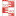

<!doctype html>
<html lang="en">
    <head>
        <meta charset="utf-8">
        <meta http-equiv="X-UA-Compatible" content="IE=edge">
        <meta name="viewport" content="initial-scale=1,user-scalable=no,maximum-scale=1,width=device-width">
        <meta name="mobile-web-app-capable" content="yes">
        <meta name="apple-mobile-web-app-capable" content="yes">
        <link rel="stylesheet" href="css/leaflet.css">
        <link rel="stylesheet" href="css/L.Control.Layers.Tree.css">
        <link rel="stylesheet" href="css/L.Control.Locate.min.css">
        <link rel="stylesheet" href="css/qgis2web.css">
        <link rel="stylesheet" href="css/fontawesome-all.min.css">
        <link rel="stylesheet" href="css/leaflet-search.css">
        <link rel="stylesheet" href="css/leaflet-control-geocoder.Geocoder.css">
        <link rel="stylesheet" href="css/leaflet-measure.css">
        <style>
        html, body, #map {
            width: 100%;
            height: 100%;
            padding: 0;
            margin: 0;
        }
        </style>
        <title></title>
    </head>
    <body>
        <div id="map">
        </div>
        <script src="js/qgis2web_expressions.js"></script>
        <script src="js/leaflet.js"></script>
        <script src="js/L.Control.Layers.Tree.min.js"></script>
        <script src="js/L.Control.Locate.min.js"></script>
        <script src="js/leaflet.rotatedMarker.js"></script>
        <script src="js/leaflet.pattern.js"></script>
        <script src="js/leaflet-hash.js"></script>
        <script src="js/Autolinker.min.js"></script>
        <script src="js/rbush.min.js"></script>
        <script src="js/labelgun.min.js"></script>
        <script src="js/labels.js"></script>
        <script src="js/leaflet-control-geocoder.Geocoder.js"></script>
        <script src="js/leaflet-measure.js"></script>
        <script src="js/leaflet-search.js"></script>
        <script src="data/UH_Nivel_1_2.js"></script>
        <script src="data/ESTACIONES_SNHN_241024_3.js"></script>
        <script>
        var highlightLayer;
        function highlightFeature(e) {
            highlightLayer = e.target;
            highlightLayer.openPopup();
        }
        var map = L.map('map', {
            zoomControl:false, maxZoom:28, minZoom:1
        }).fitBounds([[-22.752327203292843,-75.16825932162355],[-9.162702203292831,-53.52392790324002]]);
        var hash = new L.Hash(map);
        map.attributionControl.setPrefix('<a href="https://github.com/tomchadwin/qgis2web" target="_blank">qgis2web</a> &middot; <a href="https://leafletjs.com" title="A JS library for interactive maps">Leaflet</a> &middot; <a href="https://qgis.org">QGIS</a>');
        var autolinker = new Autolinker({truncate: {length: 30, location: 'smart'}});
        // remove popup's row if "visible-with-data"
        function removeEmptyRowsFromPopupContent(content, feature) {
         var tempDiv = document.createElement('div');
         tempDiv.innerHTML = content;
         var rows = tempDiv.querySelectorAll('tr');
         for (var i = 0; i < rows.length; i++) {
             var td = rows[i].querySelector('td.visible-with-data');
             var key = td ? td.id : '';
             if (td && td.classList.contains('visible-with-data') && feature.properties[key] == null) {
                 rows[i].parentNode.removeChild(rows[i]);
             }
         }
         return tempDiv.innerHTML;
        }
        // add class to format popup if it contains media
		function addClassToPopupIfMedia(content, popup) {
			var tempDiv = document.createElement('div');
			tempDiv.innerHTML = content;
			if (tempDiv.querySelector('td img')) {
				popup._contentNode.classList.add('media');
					// Delay to force the redraw
					setTimeout(function() {
						popup.update();
					}, 10);
			} else {
				popup._contentNode.classList.remove('media');
			}
		}
        var zoomControl = L.control.zoom({
            position: 'topleft'
        }).addTo(map);
        L.control.locate({locateOptions: {maxZoom: 19}}).addTo(map);
        var measureControl = new L.Control.Measure({
            position: 'topleft',
            primaryLengthUnit: 'meters',
            secondaryLengthUnit: 'kilometers',
            primaryAreaUnit: 'sqmeters',
            secondaryAreaUnit: 'hectares'
        });
        measureControl.addTo(map);
        document.getElementsByClassName('leaflet-control-measure-toggle')[0].innerHTML = '';
        document.getElementsByClassName('leaflet-control-measure-toggle')[0].className += ' fas fa-ruler';
        var bounds_group = new L.featureGroup([]);
        function setBounds() {
            map.setMaxBounds(map.getBounds());
        }
        map.createPane('pane_GoogleSatellite_0');
        map.getPane('pane_GoogleSatellite_0').style.zIndex = 400;
        var layer_GoogleSatellite_0 = L.tileLayer('https://mt1.google.com/vt/lyrs=s&x={x}&y={y}&z={z}', {
            pane: 'pane_GoogleSatellite_0',
            opacity: 1.0,
            attribution: '<a href="https://www.google.at/permissions/geoguidelines/attr-guide.html">Map data ©2015 Google</a>',
            minZoom: 1,
            maxZoom: 28,
            minNativeZoom: 0,
            maxNativeZoom: 20
        });
        layer_GoogleSatellite_0;
        map.addLayer(layer_GoogleSatellite_0);
        map.createPane('pane_ESRIOcean_1');
        map.getPane('pane_ESRIOcean_1').style.zIndex = 401;
        var layer_ESRIOcean_1 = L.tileLayer('https://services.arcgisonline.com/ArcGIS/rest/services/Ocean/World_Ocean_Base/MapServer/tile/{z}/{y}/{x}', {
            pane: 'pane_ESRIOcean_1',
            opacity: 1.0,
            attribution: '',
            minZoom: 1,
            maxZoom: 28,
            minNativeZoom: 0,
            maxNativeZoom: 20
        });
        layer_ESRIOcean_1;
        map.addLayer(layer_ESRIOcean_1);
        function pop_UH_Nivel_1_2(feature, layer) {
            layer.on({
                mouseout: function(e) {
                    if (typeof layer.closePopup == 'function') {
                        layer.closePopup();
                    } else {
                        layer.eachLayer(function(feature){
                            feature.closePopup()
                        });
                    }
                },
                mouseover: highlightFeature,
            });
            var popupContent = '<table>\
                    <tr>\
                        <td colspan="2">' + (feature.properties['gml_id'] !== null ? autolinker.link(feature.properties['gml_id'].toLocaleString()) : '') + '</td>\
                    </tr>\
                    <tr>\
                        <td colspan="2">' + (feature.properties['Nivel_1'] !== null ? autolinker.link(feature.properties['Nivel_1'].toLocaleString()) : '') + '</td>\
                    </tr>\
                    <tr>\
                        <td colspan="2">' + (feature.properties['Area_km2'] !== null ? autolinker.link(feature.properties['Area_km2'].toLocaleString()) : '') + '</td>\
                    </tr>\
                    <tr>\
                        <td colspan="2">' + (feature.properties['NOMBRE_N1'] !== null ? autolinker.link(feature.properties['NOMBRE_N1'].toLocaleString()) : '') + '</td>\
                    </tr>\
                    <tr>\
                        <td colspan="2">' + (feature.properties['Shape_Leng'] !== null ? autolinker.link(feature.properties['Shape_Leng'].toLocaleString()) : '') + '</td>\
                    </tr>\
                    <tr>\
                        <td colspan="2">' + (feature.properties['Shape_Area'] !== null ? autolinker.link(feature.properties['Shape_Area'].toLocaleString()) : '') + '</td>\
                    </tr>\
                </table>';
            var content = removeEmptyRowsFromPopupContent(popupContent, feature);
			layer.on('popupopen', function(e) {
				addClassToPopupIfMedia(content, e.popup);
			});
			layer.bindPopup(content, { maxHeight: 400 });
        }

        function style_UH_Nivel_1_2_0() {
            return {
                pane: 'pane_UH_Nivel_1_2',
                opacity: 1,
                color: 'rgba(0,0,0,1.0)',
                dashArray: '',
                lineCap: 'square',
                lineJoin: 'bevel',
                weight: 4.0,
                fillOpacity: 0,
                interactive: false,
            }
        }
        map.createPane('pane_UH_Nivel_1_2');
        map.getPane('pane_UH_Nivel_1_2').style.zIndex = 402;
        map.getPane('pane_UH_Nivel_1_2').style['mix-blend-mode'] = 'normal';
        var layer_UH_Nivel_1_2 = new L.geoJson(json_UH_Nivel_1_2, {
            attribution: '',
            interactive: false,
            dataVar: 'json_UH_Nivel_1_2',
            layerName: 'layer_UH_Nivel_1_2',
            pane: 'pane_UH_Nivel_1_2',
            onEachFeature: pop_UH_Nivel_1_2,
            style: style_UH_Nivel_1_2_0,
        });
        bounds_group.addLayer(layer_UH_Nivel_1_2);
        map.addLayer(layer_UH_Nivel_1_2);
        function pop_ESTACIONES_SNHN_241024_3(feature, layer) {
            layer.on({
                mouseout: function(e) {
                    if (typeof layer.closePopup == 'function') {
                        layer.closePopup();
                    } else {
                        layer.eachLayer(function(feature){
                            feature.closePopup()
                        });
                    }
                },
                mouseover: highlightFeature,
            });
            var popupContent = '<table>\
                    <tr>\
                        <th scope="row">NOMBRE EST</th>\
                        <td>' + (feature.properties['NOMBRE EST'] !== null ? autolinker.link(feature.properties['NOMBRE EST'].toLocaleString()) : '') + '</td>\
                    </tr>\
                    <tr>\
                        <th scope="row">LATITUD</th>\
                        <td>' + (feature.properties['LATITUD'] !== null ? autolinker.link(feature.properties['LATITUD'].toLocaleString()) : '') + '</td>\
                    </tr>\
                    <tr>\
                        <th scope="row">LONGITUD</th>\
                        <td>' + (feature.properties['LONGITUD'] !== null ? autolinker.link(feature.properties['LONGITUD'].toLocaleString()) : '') + '</td>\
                    </tr>\
                    <tr>\
                        <th scope="row">CUERPO DE</th>\
                        <td>' + (feature.properties['CUERPO DE'] !== null ? autolinker.link(feature.properties['CUERPO DE'].toLocaleString()) : '') + '</td>\
                    </tr>\
                    <tr>\
                        <th scope="row">DPTO.</th>\
                        <td>' + (feature.properties['DPTO.'] !== null ? autolinker.link(feature.properties['DPTO.'].toLocaleString()) : '') + '</td>\
                    </tr>\
                    <tr>\
                        <th scope="row">PROVINCIA</th>\
                        <td>' + (feature.properties['PROVINCIA'] !== null ? autolinker.link(feature.properties['PROVINCIA'].toLocaleString()) : '') + '</td>\
                    </tr>\
                    <tr>\
                        <th scope="row">MUNICIPIO</th>\
                        <td>' + (feature.properties['MUNICIPIO'] !== null ? autolinker.link(feature.properties['MUNICIPIO'].toLocaleString()) : '') + '</td>\
                    </tr>\
                    <tr>\
                        <th scope="row">LOCALIDAD</th>\
                        <td>' + (feature.properties['LOCALIDAD'] !== null ? autolinker.link(feature.properties['LOCALIDAD'].toLocaleString()) : '') + '</td>\
                    </tr>\
                    <tr>\
                        <th scope="row">MEDICIÓN</th>\
                        <td>' + (feature.properties['MEDICIÓN'] !== null ? autolinker.link(feature.properties['MEDICIÓN'].toLocaleString()) : '') + '</td>\
                    </tr>\
                </table>';
            var content = removeEmptyRowsFromPopupContent(popupContent, feature);
			layer.on('popupopen', function(e) {
				addClassToPopupIfMedia(content, e.popup);
			});
			layer.bindPopup(content, { maxHeight: 400 });
        }

        function style_ESTACIONES_SNHN_241024_3_0() {
            return {
                pane: 'pane_ESTACIONES_SNHN_241024_3',
        rotationAngle: 0.0,
        rotationOrigin: 'center center',
        icon: L.icon({
            iconUrl: 'markers/ESTACIONES_SNHN_241024_3.svg',
            iconSize: [15.2, 15.2]
        }),
                interactive: true,
            }
        }
        map.createPane('pane_ESTACIONES_SNHN_241024_3');
        map.getPane('pane_ESTACIONES_SNHN_241024_3').style.zIndex = 403;
        map.getPane('pane_ESTACIONES_SNHN_241024_3').style['mix-blend-mode'] = 'normal';
        var layer_ESTACIONES_SNHN_241024_3 = new L.geoJson(json_ESTACIONES_SNHN_241024_3, {
            attribution: '',
            interactive: true,
            dataVar: 'json_ESTACIONES_SNHN_241024_3',
            layerName: 'layer_ESTACIONES_SNHN_241024_3',
            pane: 'pane_ESTACIONES_SNHN_241024_3',
            onEachFeature: pop_ESTACIONES_SNHN_241024_3,
            pointToLayer: function (feature, latlng) {
                var context = {
                    feature: feature,
                    variables: {}
                };
                return L.marker(latlng, style_ESTACIONES_SNHN_241024_3_0(feature));
            },
        });
        bounds_group.addLayer(layer_ESTACIONES_SNHN_241024_3);
        map.addLayer(layer_ESTACIONES_SNHN_241024_3);
        var osmGeocoder = new L.Control.Geocoder({
            collapsed: true,
            position: 'topleft',
            text: 'Search',
            title: 'Testing'
        }).addTo(map);
        document.getElementsByClassName('leaflet-control-geocoder-icon')[0]
        .className += ' fa fa-search';
        document.getElementsByClassName('leaflet-control-geocoder-icon')[0]
        .title += 'Search for a place';
        var baseMaps = {};
        var overlaysTree = [
            {label: ' ESTACIONES_SNHN_24.10.24', layer: layer_ESTACIONES_SNHN_241024_3},
            {label: ' UH_Nivel_1', layer: layer_UH_Nivel_1_2},
            {label: "ESRI Ocean", layer: layer_ESRIOcean_1},
            {label: "Google Satellite", layer: layer_GoogleSatellite_0},]
        var lay = L.control.layers.tree(null, overlaysTree,{
            //namedToggle: true,
            //selectorBack: false,
            //closedSymbol: '&#8862; &#x1f5c0;',
            //openedSymbol: '&#8863; &#x1f5c1;',
            //collapseAll: 'Collapse all',
            //expandAll: 'Expand all',
            collapsed: true,
        });
        lay.addTo(map);
        setBounds();
        var i = 0;
        layer_ESTACIONES_SNHN_241024_3.eachLayer(function(layer) {
            var context = {
                feature: layer.feature,
                variables: {}
            };
            layer.bindTooltip((layer.feature.properties['NOMBRE EST'] !== null?String('<div style="color: #323232; font-size: 7pt; font-family: \'Arial Black\', sans-serif;">' + layer.feature.properties['NOMBRE EST']) + '</div>':''), {permanent: true, offset: [-0, -16], className: 'css_ESTACIONES_SNHN_241024_3'});
            labels.push(layer);
            totalMarkers += 1;
              layer.added = true;
              addLabel(layer, i);
              i++;
        });
        map.addControl(new L.Control.Search({
            layer: layer_ESTACIONES_SNHN_241024_3,
            initial: false,
            hideMarkerOnCollapse: true,
            propertyName: 'NOMBRE EST'}));
        document.getElementsByClassName('search-button')[0].className +=
         ' fa fa-binoculars';
        resetLabels([layer_ESTACIONES_SNHN_241024_3]);
        map.on("zoomend", function(){
            resetLabels([layer_ESTACIONES_SNHN_241024_3]);
        });
        map.on("layeradd", function(){
            resetLabels([layer_ESTACIONES_SNHN_241024_3]);
        });
        map.on("layerremove", function(){
            resetLabels([layer_ESTACIONES_SNHN_241024_3]);
        });
        </script>
    </body>
</html>
